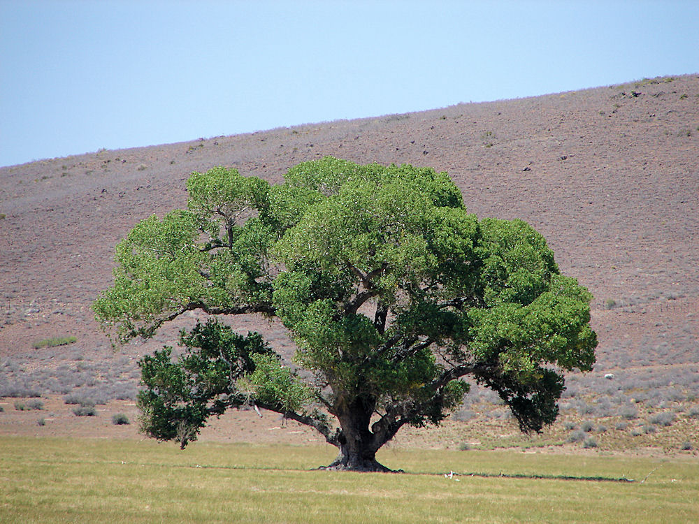

Kansas
Kansas, situated on the American Great Plains, became the 34th state on January 29, 1861. Its path to statehood was long and bloody: After the Kansas-Nebraska Act of 1854 opened the two territories to settlement and allowed the new settlers to determine whether the states would be admitted to the union as “free” or ”slave,” North and South competed to send the most settlers into the region. This quickly led to violence, and the territory became known as “Bleeding Kansas.” Kansas has long been known as part of America’s agricultural heartland and is home to the major U.S. military installation Fort Leavenworth. In 1954, it became a battleground of the civil rights movement when the landmark Brown v. Board of Education of Topeka case was decided in the Supreme Court, ending the doctrine of “separate but equal” in public schools. Kansas is also known for its contributions to jazz music, barbecue and as the setting of L. Frank Baum’s classic children’s book The Wizard of Oz.
| Date of Statehood | Capital | Population | Size |
|---|---|---|---|
| January 29, 1861 | Topeka | 2.94 million | 82,278 square miles |
Motto
Ad astra per aspera (“To the stars through difficulties”)
Flower
Wild Native Sunflower

Bird
Western Meadowlark

Tree
Cottonwood
Interesting facts
- During the Civil War, Kansas suffered the highest rate of fatal casualties of any Union state.
- Fort Riley was established near the Kansas River in 1853 to protect settlers and trade along the Oregon and Santa Fe Trails. In 1866, the 7th Cavalry organized at the fort under General George Armstrong Custer, who later led the regiment in the infamous attack on Sioux and Cheyenne tribes at the Battle of Little Bighorn in June of 1876.
- When French astronomer Pierre Janssen first discovered the element he called helium on the sun in 1868, it was believed to be one of the rarest elements. It wasn’t until 1905, when faculty members at The University of Kansas in Lawrence began experimenting with gas from a newly drilled well in Dexter, that helium was identified as a common element found on Earth.
- Meade’s Ranch in Osborne County, Kansas, is the Geodetic Center of North America—the point of reference by which all property lines and boundaries in North America are surveyed. Identified in 1901, this triangulation station for the United States, Canada and Mexico is also known as the North American Datum.